▲ 인천개항박물관 정면. 촬영 시기는 자료에 없다 ⓒ 한국관광공사 · 공공누리 제1유형
"차이나타운 가서 짜장면만 먹고 오면 끝 아닌가? 차는 어디에 대고, 월요일에 가도 되나?" 이 글은 2026년 10월 21일 기준으로 인천문화재단 관람 안내, 인천시 보도자료, 한국관광공사 자료를 모아 인천 개항장과 차이나타운을 반나절 걸어서 도는 순서를 정리했다. 결론부터 말하면 박물관·전시관은 월요일에 문을 닫고, 다섯 곳을 묶은 통합이용권이 성인 3,400원이다. 인천문화재단 관람안내 바로가기
개항장은 걸어서 움직이는 동네라 코스 자체는 어렵지 않다. 다만 지도 앱에서 주소가 바뀐 곳이 많고, 주차장마다 운영시간이 달라 미리 알아 둘 것이 있다.
💡 먼저 결론
인천개항박물관·근대건축전시관·한중문화관·짜장면박물관은 모두 화~일 09:00~18:00(입장 마감 17:30)이고 월요일에 쉰다. 통합이용권은 성인 3,400원(개인). 자유공원은 한국관광공사 정보상 상시 개방·연중무휴다. 차는 인천시가 연 개항장 공영주차장(126면)이 신포동·차이나타운 인접 주차장이고, 대중교통은 수도권 1호선 인천역 1번 출구에서 걷는 것이 가장 단순하다.
1. 먼저 바로잡기 — 월요일 방문과 '중구' 주소
인천문화재단 안내에 따르면 박물관·전시관 전체의 정기 휴관일은 매주 월요일, 1월 1일, 설날·추석 당일이다. 월요일이 공휴일이면 다음 날 쉰다. 월요일에 개항장을 간다면 걷기와 자유공원, 거리 구경 중심으로 짜야 한다. 관람안내 바로가기
또 하나, 주소 표기가 달라졌다. 인천시는 2025년 보도자료에서 2026년 7월 1일부터 현 중구 내륙과 동구가 합쳐 제물포구로, 영종도 일대가 영종구로 바뀐다고 밝혔고, 2026년 7월 6일 YTN 보도는 제물포구·영종구·서해구·검단구 4개 구가 새로 생겨 인천이 '2군·9구' 체제가 됐다고 전했다. 한국관광공사와 인천문화재단 자료에도 이미 '제물포구'로 적혀 있다. 다만 인천시 5월 보도자료는 주차장 주소를 아직 '중구'로 적고 있어, 지도 앱에서는 두 표기가 섞여 보일 수 있다. 예전 블로그의 '중구 신포로' 주소는 지금 '제물포구 신포로'로 보면 된다.
| 궁금한 점 | 확인한 내용 | 근거 |
|---|---|---|
| 월요일에 가도 되나 | 박물관·전시관은 휴관. 자유공원은 상시 개방 | 인천문화재단·한국관광공사 |
| "전부 차이나타운 안에 있다" | 한중문화관·짜장면박물관은 차이나타운, 인천개항박물관·근대건축전시관은 신포로 쪽으로 나뉜다 | 인천문화재단 시설 주소 |
| 주소 표기 | 중구·동구 → 제물포구(2026-07-01 출범, 영종도는 영종구) | 인천시 보도자료·YTN(2026-07-06)·TourAPI |
| 차이나타운 유래 | 1884년 인천화상조계장정으로 청나라 조계가 만들어진 곳 | 인천시 문화유산 안내 |
표의 핵심은 "차이나타운" 하나로 묶어 알던 시설이 실제로는 두 권역으로 나뉘고, 월요일에는 박물관·전시관이 쉬어 자유공원만 열려 있다는 점이다. 주소가 제물포구로 바뀐 것은 표 기준으로 행정구역 표기가 바뀐 것이다.
▲ 인천개항박물관 정면. 옛 일본 제1은행 인천지점 건물이다. 촬영 시기는 자료에 없다. ⓒ 한국관광공사 · 공공누리 제1유형
2. 반나절 걷기 순서 — 인천역에서 신포동까지
공식 이동시간은 박물관 안내의 '인천역 1번 출구에서 도보' 수치만 있다. 한중문화관 약 5분, 짜장면박물관 약 4분, 인천개항박물관과 근대건축전시관 약 8분이다. 시설 사이 이동시간은 공식 수치가 없어 적지 않는다. 아래 순서는 이 거리 관계를 이용한 예시다.
| 순서 | 장소 | 체크 |
|---|---|---|
| 1 | 인천역 1번 출구 → 차이나타운 입구 | 1호선 인천역이 시작점 |
| 2 | 한중문화관(제물량로 238) | 09:00~18:00, 성인 1,000원 |
| 3 | 짜장면박물관(차이나타운로 56-14) | 성인 1,000원, 식사는 업소별 확인 |
| 4 | 자유공원(제물량로232번길 46) | 상시 개방, 전망 위주 |
| 5 | 제물포구락부(자유공원남로 25) | 09:30~17:30, 월요일 휴관 |
| 6 | 인천개항박물관·근대건축전시관(신포로) | 입장 마감 17:30 |
표의 뒤쪽 두 곳은 입장 마감 17:30과 월요일 휴관이 걸려 있어, 늦은 오후에 도착하면 못 볼 수 있다. 그래서 늦게 닿을 것 같으면 운영시간부터 확인하고 순서를 바꾸는 편이 낫다.
▲ 차이나타운 입구의 패루. 2023년 4월 30일 촬영. ⓒ Mobius6 · CC BY-SA 4.0 · Wikimedia Commons
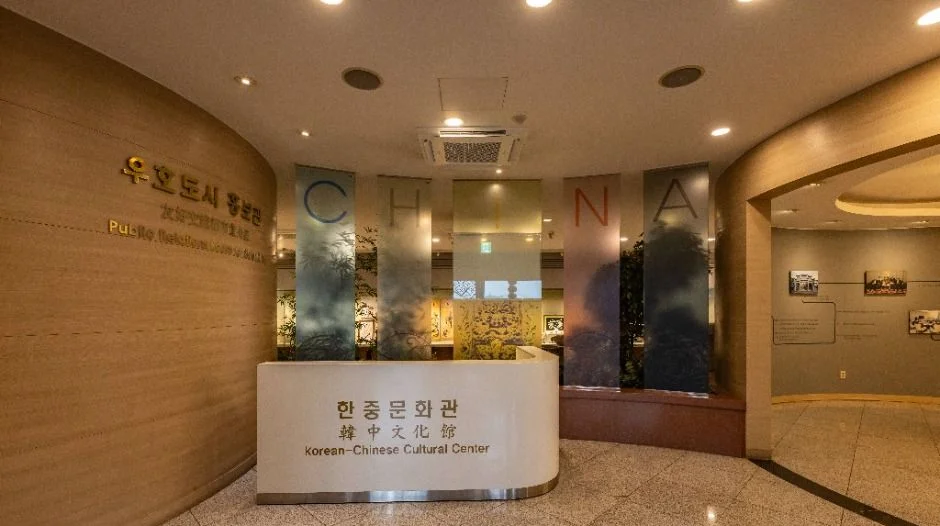
▲ 한중문화관 1층 로비. 촬영 시기는 자료에 없다. ⓒ 한국관광공사 · 공공누리 제1유형
입장 마감이 17:30이라 박물관은 늦어도 오후 5시 전에 도착해야 한다. 일몰 시각은 이 글에서 별도로 확인하지 못했다.
3. 박물관·전시관 — 요금과 통합이용권
인천문화재단 안내의 관람료는 아래와 같다. 어린이(만 12세 이하)와 만 65세 이상은 무료이고, 장애인·국가유공자·한부모가족·생계·의료수급자도 무료 대상이다. 제물포구 주민은 50% 할인이라고 안내돼 있다. 요금·통합권 안내 바로가기
| 시설 | 성인 | 청소년 |
|---|---|---|
| 인천개항박물관 | 500원 | 300원 |
| 근대건축전시관 | 500원 | 300원 |
| 한중문화관(인천화교역사관 포함) | 1,000원 | 700원 |
| 짜장면박물관 | 1,000원 | 700원 |
| 대불호텔전시관 | 1,000원 | 700원 |
| 통합이용권(5개 시설) | 3,400원 | 2,300원 |
통합이용권은 한중문화관·근대건축전시관·인천개항박물관·대불호텔전시관·짜장면박물관이 대상이고, 개인 성인 3,400원이다. 개별 요금을 더하면 4,000원이라 600원이 싸다. 유효기간은 안내문에 적혀 있지 않았다. 예매는 인천문화재단이 안내한 통합이용권 예매 링크에서 한다.
▲ 인천개항박물관 전시실의 거리 연출 전시. 촬영 시기는 자료에 없다. ⓒ 한국관광공사 · 공공누리 제1유형
▲ 인천개항박물관(옛 일본 제1은행 인천지점)의 해 질 녘 외관. 2024년 9월 14일 촬영. ⓒ Boubloub · CC0 · Wikimedia Commons
인천개항박물관은 인천시 유형문화유산 제7호이며 개항기 일본 제1은행 인천지점 건물이다. 중앙 돔이 있는 후기 르네상스 양식 석조건축물로, 2010년부터 박물관으로 쓰이고 있다. 인천개항박물관 안내 바로가기
▲ 박물관 건물을 축소한 모형 전시. 촬영 시기는 자료에 없다. ⓒ 한국관광공사 · 공공누리 제1유형
근대건축전시관은 인천시 유형문화유산 제50호로, 개항기 일본 제18은행 인천지점 건물이다. 금고와 지붕 구조가 은행 시절 모습대로 남아 있고, 한국관광공사 정보의 관람 소요시간은 30분이다.
▲ 옛 일본 제18은행 인천지점인 근대건축전시관의 해 질 녘 모습. 2024년 9월 14일 촬영. 입장은 17:30까지라 이 시간에는 건물 밖 구경만 가능하다. ⓒ Boubloub · CC0 · Wikimedia Commons
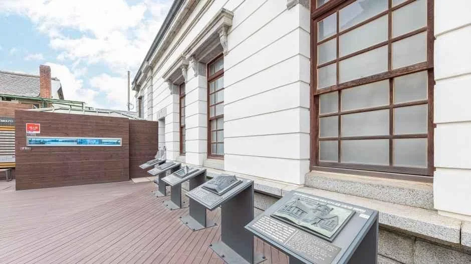
▲ 근대건축전시관 야외 안내판 공간. 촬영 시기는 자료에 없다. ⓒ 한국관광공사 · 공공누리 제1유형
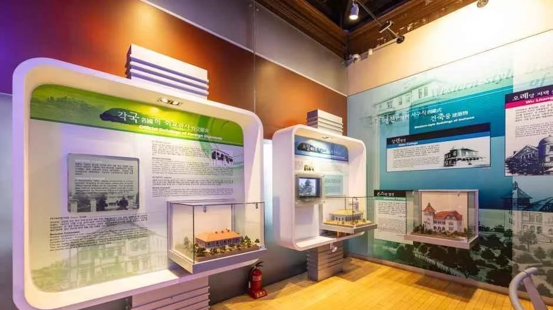
▲ 근대건축전시관 내부 전시. 촬영 시기는 자료에 없다. ⓒ 한국관광공사 · 공공누리 제1유형
4. 자유공원과 제물포구락부
한국관광공사는 자유공원을 인천항 개항 5년 만에 만들어진 우리나라 최초의 서구식 공원으로 소개한다. 정상에 한미수교 백주년기념탑과 맥아더 장군 동상(1957년 9월 15일 완공)이 있다. 이용시간은 상시 개방, 휴일 없음, 주차 가능으로 안내돼 있으며 문의는 032-760-7597이다. 다만 공원 내부 주차장의 규모와 요금은 확인하지 못했다.
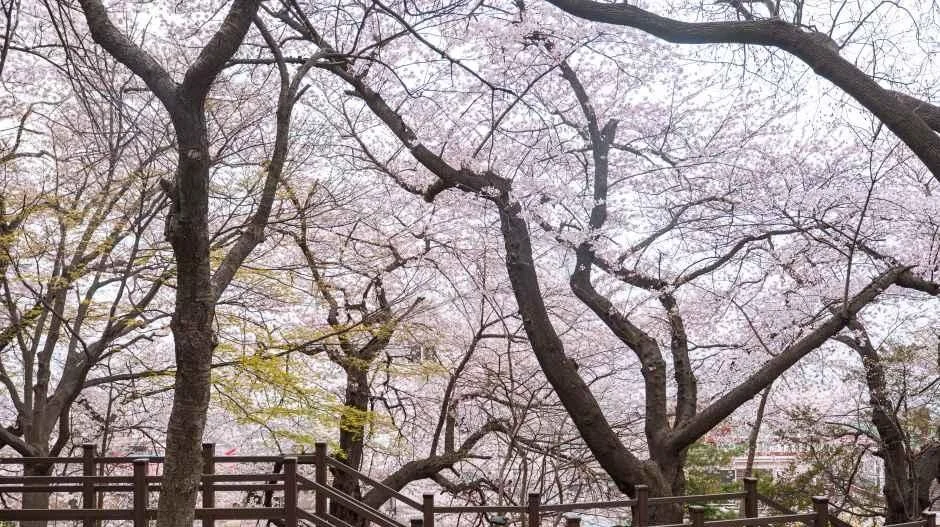
▲ 벚꽃이 핀 자유공원 산책로. 한국관광공사 소개문은 매년 4월 벚꽃축제가 열린다고 적는다. ⓒ 한국관광공사 · 공공누리 제1유형
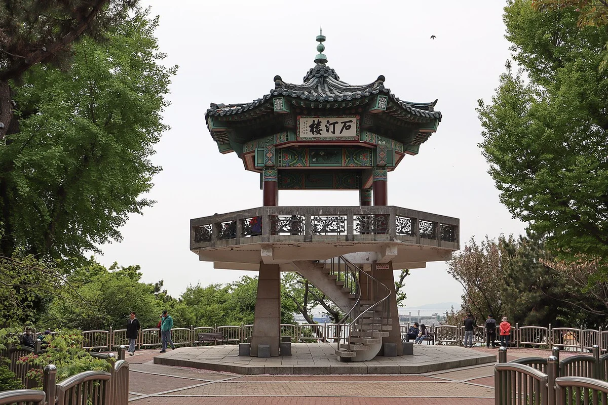
▲ 자유공원의 정자. 2023년 4월 30일 촬영. 사진이 촬영된 계절은 봄이다. ⓒ Mobius6 · CC BY-SA 4.0 · Wikimedia Commons
▲ 자유공원에서 시가지를 내려다본 모습. 촬영 시기는 자료에 없다. ⓒ 한국관광공사 · 공공누리 제1유형
제물포구락부는 1901년 외국인 사교장으로 지은 2층 벽돌 건물이다. 한국관광공사 정보로는 이용시간 09:30~17:30, 월요일·1월 1일·설추석 연휴 휴관, 주차 불가다. 입장료는 한국관광공사 정보에 무료로 적혀 있다(2026-10-21 기준, 시설 공식 요금표는 확인하지 못함). 검색에서는 인천시 유형문화유산 제17호로 소개되지만 공식 원문으로 재확인하지는 못했다.
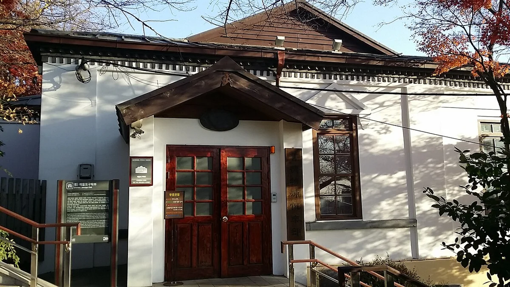
▲ 2018년 11월 30일 촬영한 구 제물포구락부 전면. 건물 옆에 붉게 물든 잎이 보인다. ⓒ Ncmi21 · CC BY-SA 4.0 · Wikimedia Commons
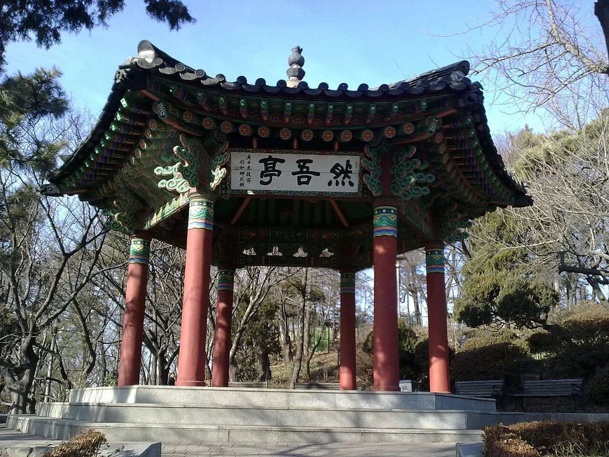
▲ 2011년 2월 19일 촬영한 자유공원 연오정. 잎이 진 겨울 풍경이다. ⓒ 잉여빵 · CC BY-SA 3.0 · Wikimedia Commons
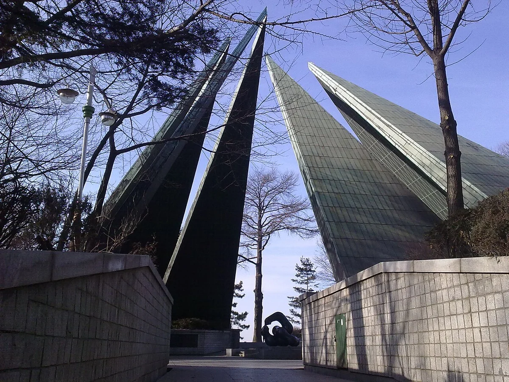
▲ 2011년 2월 19일 촬영한 자유공원 한미수교백주년기념탑. ⓒ 잉여빵 · CC BY-SA 3.0 · Wikimedia Commons
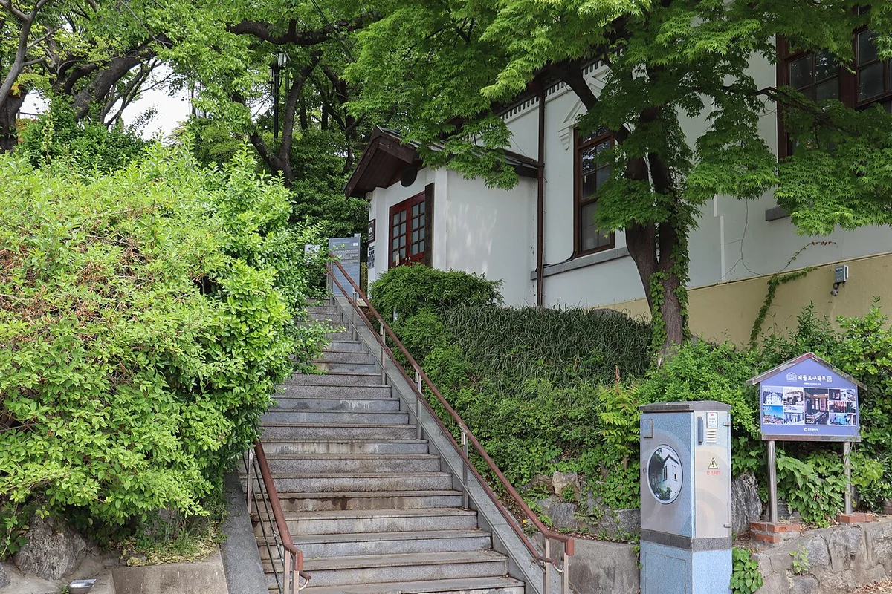
▲ 제물포구락부로 오르는 계단 쪽 외관. 2023년 4월 30일 촬영. ⓒ Mobius6 · CC BY-SA 4.0 · Wikimedia Commons
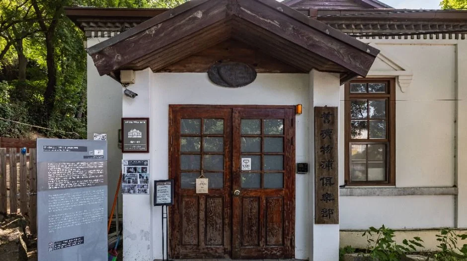
▲ 제물포구락부 출입구. 촬영 시기는 자료에 없다. ⓒ 한국관광공사 · 공공누리 제1유형
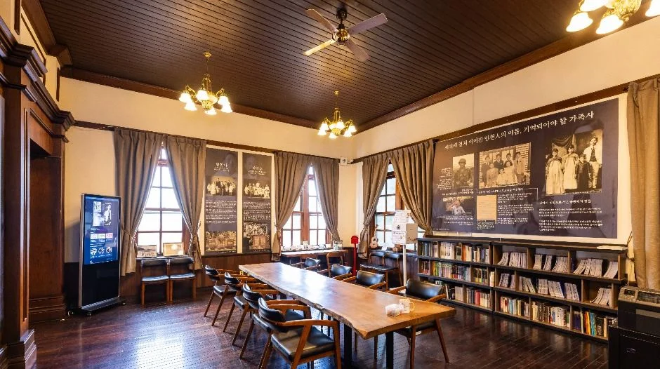
▲ 제물포구락부 내부 열람 공간. 촬영 시기는 자료에 없다. ⓒ 한국관광공사 · 공공누리 제1유형
5. 차이나타운 — 짜장면박물관과 한중문화관
짜장면박물관은 국가등록유산 제246호 '선린동 공화춘' 건물을 활용한다. 공화춘은 개항기에 무역상에게 숙식을 제공했고, 일제강점기부터 1980년대까지 큰 연회장을 갖춘 중화요리점이었다. 2012년부터 박물관으로 쓰이며 성인 1,000원이다.
▲ 짜장면박물관 외관. 촬영 시기는 자료에 없다. ⓒ 한국관광공사 · 공공누리 제1유형
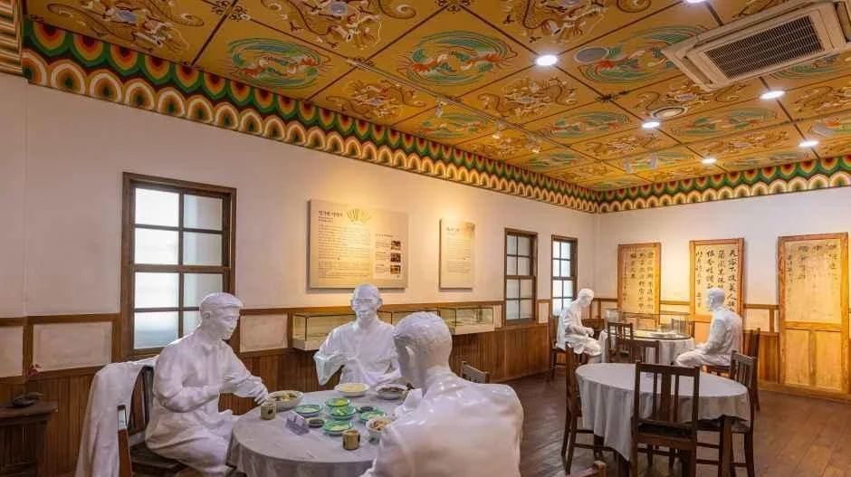
▲ 짜장면박물관 안의 옛 연회장 연출. 촬영 시기는 자료에 없다. ⓒ 한국관광공사 · 공공누리 제1유형
▲ 짜장면박물관 주방 재현 전시. 촬영 시기는 자료에 없다. ⓒ 한국관광공사 · 공공누리 제1유형
한중문화관은 2005년 개관한 지하 1층~지상 4층 건물이다. 1층 갤러리, 2층 한중문화전시관, 3층 우호도시홍보관, 4층 공연장이 있고 별관으로 인천화교역사관이 있다.
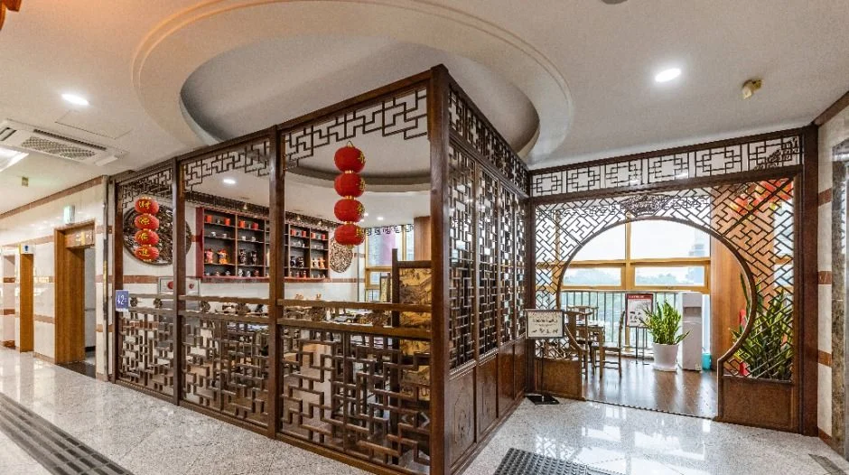
▲ 한중문화관 전시실. 촬영 시기는 자료에 없다. ⓒ 한국관광공사 · 공공누리 제1유형
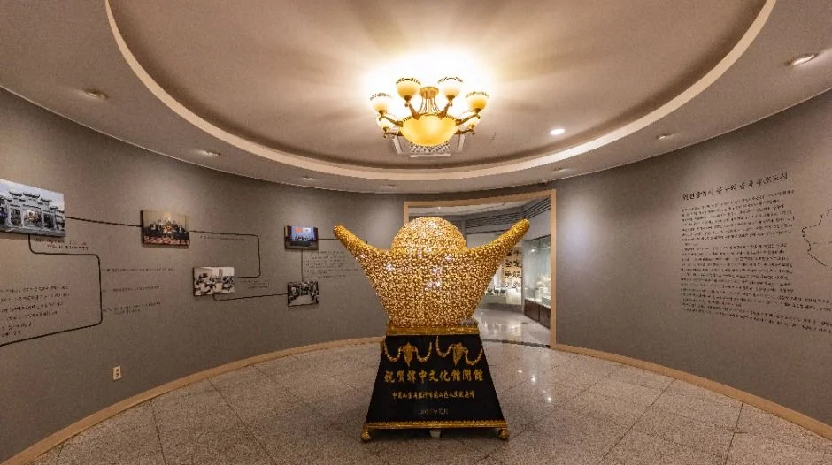
▲ 한중문화관 전시 공간. 촬영 시기는 자료에 없다. ⓒ 한국관광공사 · 공공누리 제1유형
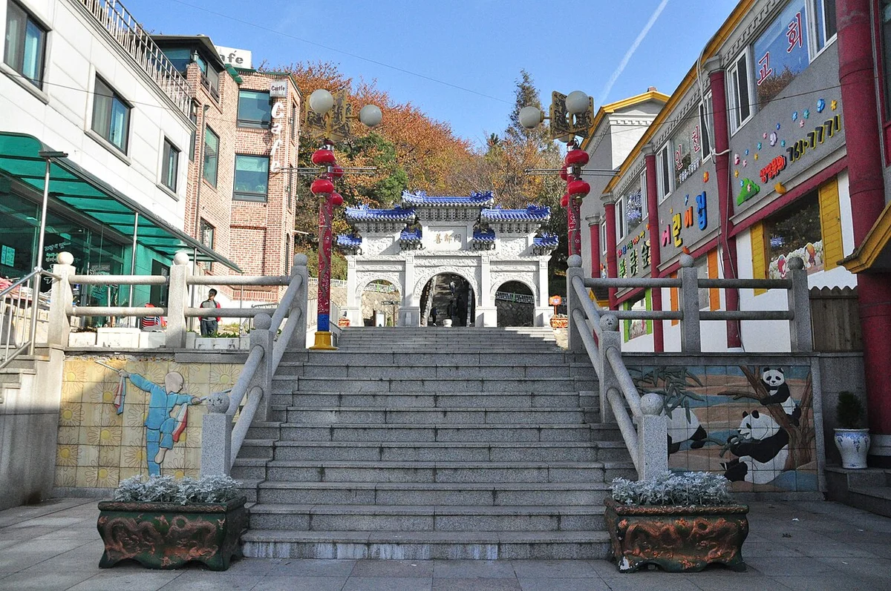
▲ 2010년 11월 13일 촬영한 차이나타운에서 자유공원으로 오르는 계단. 가을 잎이 보인다. ⓒ Jordi Sanchez Terue · CC BY-SA 2.0 · Wikimedia Commons
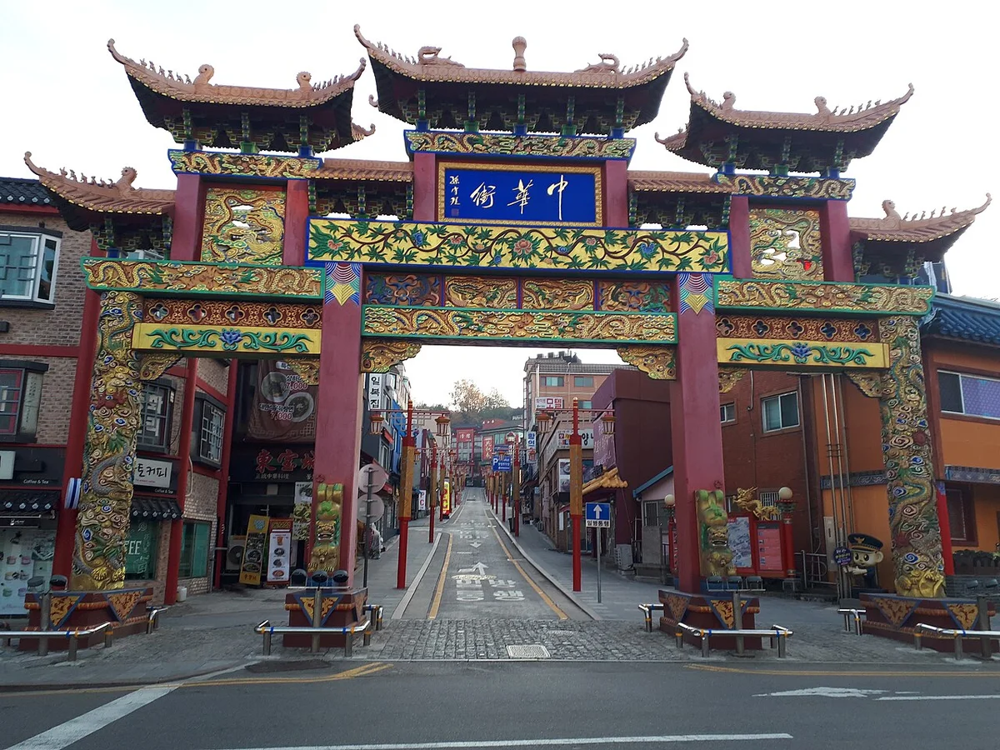
▲ 2019년 11월 23일 촬영한 차이나타운 패루와 골목. ⓒ 이강철 · CC BY-SA 4.0 · Wikimedia Commons
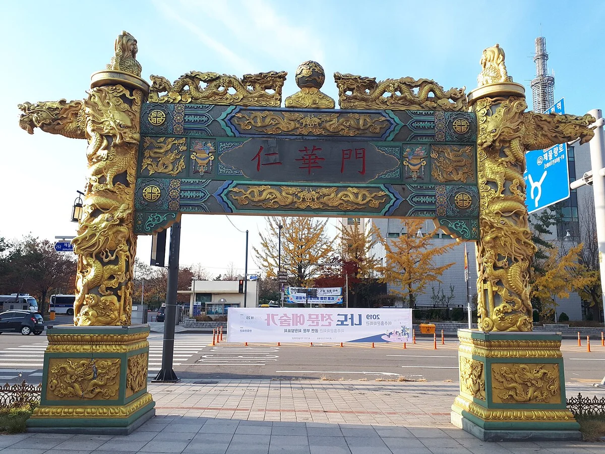
▲ 2019년 11월 23일 촬영한 인화문. 뒤로 노란 잎의 나무가 보인다. ⓒ 이강철 · CC BY-SA 3.0 · Wikimedia Commons
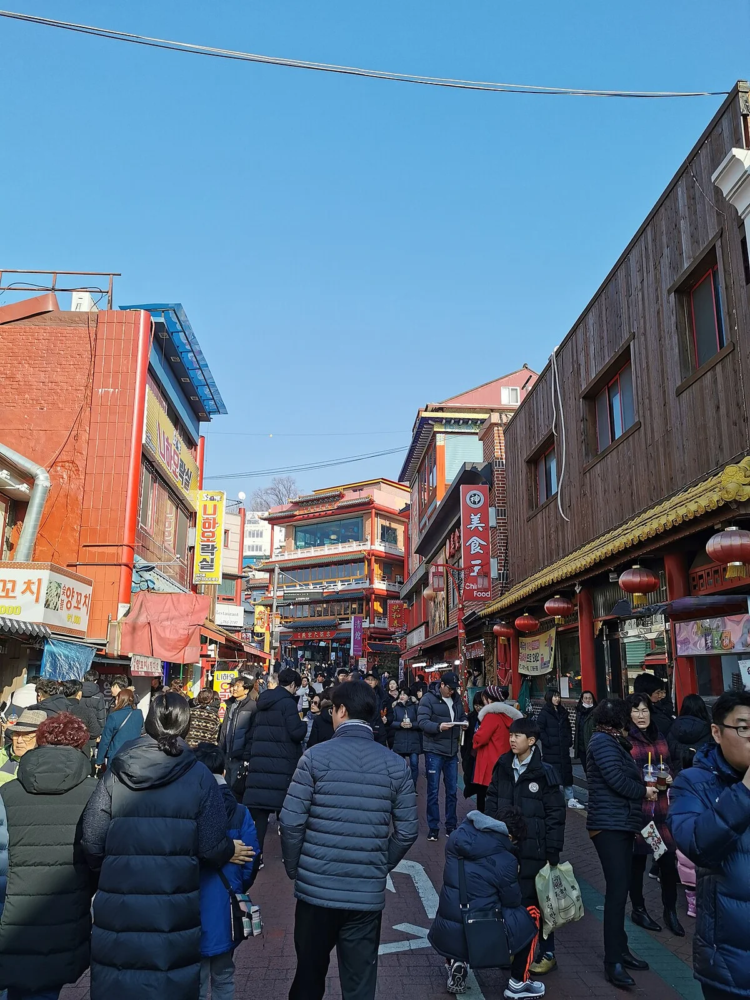
▲ 2020년 1월 4일 촬영한 차이나타운 거리. 두꺼운 겉옷을 입은 사람들이 많다. ⓒ AhmadElq · CC BY-SA 4.0 · Wikimedia Commons
차이나타운 골목 자체는 2025년 인천시 생활문화유산으로 선정됐다. 업소별 영업시간과 짜장면 가격은 공식 자료에서 확인하지 못해 적지 않는다. 인천시 문화유산 안내 바로가기
6. 주차 — 공영주차장 어디에 댈까
인천시는 신포동·차이나타운 주차난을 줄이려고 개항장 공영주차장을 열었다고 발표했다. 위치는 항동4가 2-1(제물량로 213 일원), 지상 2층(3개 층) 126면, 총사업비 약 56억 원이다. 요금은 2026년 6월 30일까지 두 달간 무료 시범 운영이었고, 7월 1일부터 최초 30분 600원, 이후 15분당 300원, 하루 6,000원으로 안내됐다.
인천시 보도자료에는 운영시간이 없고, 5월 언론 보도는 통합관제시스템으로 24시간 운영한다고 전했다. 6월 25일 인천 중구 발표를 옮긴 보도(여성종합뉴스)는 7월 1일 정식 개장 후 24시간 연중무휴로 운영하고, 요금은 2급지 체계(최초 30분 600원, 이후 15분당 300원, 전일 6,000원)이며, 126면 중 30면은 월 정기권(월 6만 원)이라고 전했다.
운영은 중구시설관리공단이 맡다가 7월 1일 행정체제 개편 후 제물포구시설관리공단이 이어받는다고 했다. 7월 이후 실제 징수 요금이 바뀌었는지는 기준일(10월 21일) 현재 제물포구·시설관리공단 공지에서 확인하지 못했으니 현장 요금 안내판을 보자. 인천시 주차장 보도자료 바로가기
| 주차장 | 위치 | 운영시간 | 요금 |
|---|---|---|---|
| 한중문화관 공영주차장 | 제물량로 236 | 24시간 | 최초 30분 1,000원, 이후 15분당 500원, 일 10,000원 |
| 차이나타운 공영주차장 | 차이나타운로44번길 28-12 | 09:00~21:00 | 안내문 미기재 |
| 제물포구청사 부설주차장 | 신포로27번길 80 | 월~금 09:00~19:00, 주말 09:00~18:00 | 안내문 미기재 |
| 동화마을 공영주차장 | 제물량로 307-1 | 24시간 | 안내문 미기재 |
| 누들플랫폼 공영주차장 | 신포로27번길 36 | 24시간 | 안내문 미기재 |
주차장 문의는 인천제물포구시설관리공단 주차사업팀 032-850-1471이다. 한중문화관 주차장은 24시간이지만 요금이 상대적으로 높으니, 오래 머물 계획이면 보도자료의 개항장 공영주차장 요금과 비교해 보자. 실제 현행 요금은 시설에 직접 확인해야 한다.
7. 대중교통 — 인천역이 시작점
인천문화재단 안내 기준으로 수도권 1호선 인천역 1번 출구에서 짜장면박물관 도보 약 4분, 한중문화관 약 5분, 인천개항박물관·근대건축전시관 약 8분이다. 버스는 15번·26번이 제물포구청 정류장에서 한중문화관까지 도보 약 2분, 개항박물관·근대건축전시관까지 약 4분으로 안내된다. 짜장면박물관은 2·15·26·45번 인천역 하차로 안내돼 있다.
같은 인천의 가볼 만한 곳으로 송도·월미도 기사, 소래포구 축제 기사, 영종도 겨울 일몰 드라이브 기사가 있다. 월미도는 개항장 인근이지만 이 글에서는 거리와 이동시간을 확인하지 못해 코스에 넣지 않았다.
8. 확인하지 못한 것
- 개항장 공영주차장의 7월 이후 실제 적용 요금(발표 요금은 위 6장 참고, 제물포구·시설관리공단 현행 공지는 확인하지 못함)
- 자유공원 내부 주차장 규모·요금, 제물포구락부 입장료의 시설 공식 요금표(한국관광공사 정보는 무료)
- 차이나타운 식당 영업시간·메뉴 가격
- 시설 사이 도보 이동시간, 일몰·야경 시각
- 신포국제시장 운영시간
✅ 출발 전 체크
1) 박물관·전시관은 월요일 휴관, 입장 마감 17:30 2) 통합이용권 성인 3,400원(5개 시설) 3) 주소는 '제물포구'로 검색 4) 개항장 공영주차장 126면, 요금은 현장·공단(032-850-1471) 확인 5) 한국관광공사 사진은 촬영 시기가 자료에 없고, Commons 사진은 2023년 4월·2024년 9월 촬영이다.
9. 정리
개항장 반나절 코스의 핵심은 월요일을 피하고, 17:30 입장 마감 전에 박물관을 끝내는 것이다. 박물관·전시관은 화~일 09:00~18:00, 통합이용권은 성인 3,400원이며 자유공원은 상시 개방이다.
주차는 개항장 공영주차장 126면과 한중문화관 공영주차장이 있고, 대중교통은 1호선 인천역 1번 출구에서 4~8분 걷는다. 7월 이후 실제 징수 요금(발표는 최초 30분 600원)·식당 정보는 확인하지 못했으며, 이 기사는 2026년 10월 21일 기준이다.